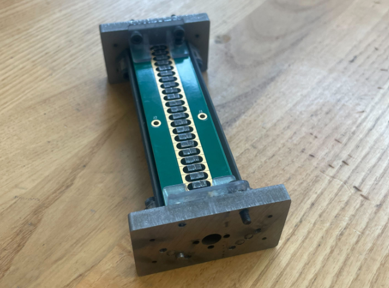
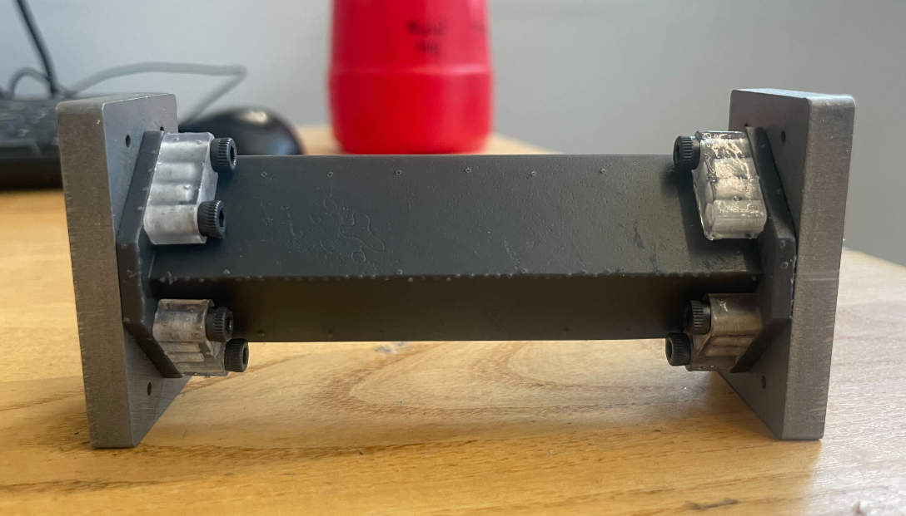
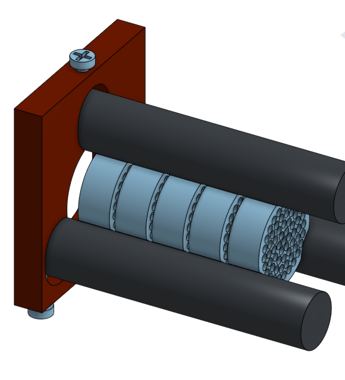
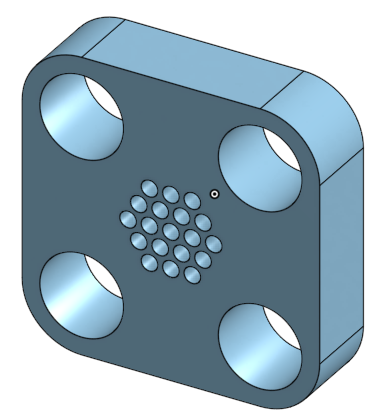
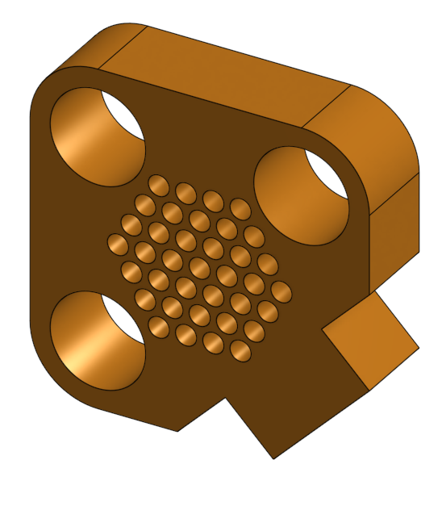
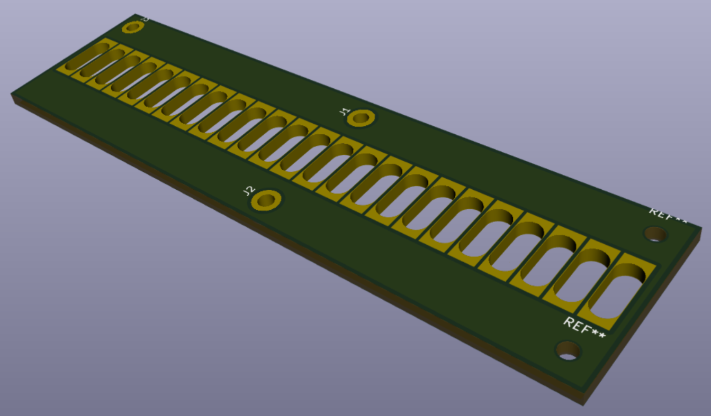
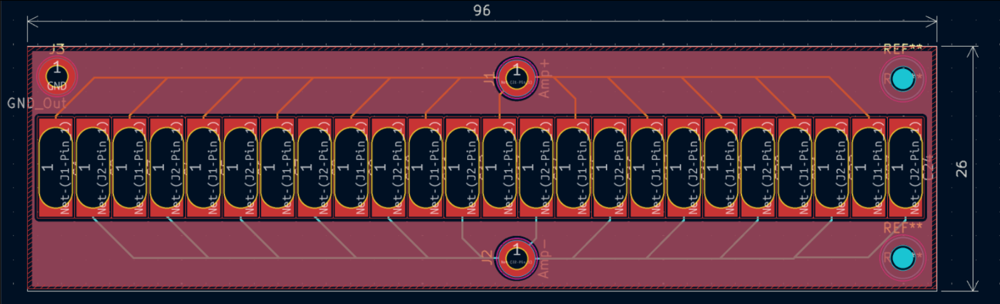
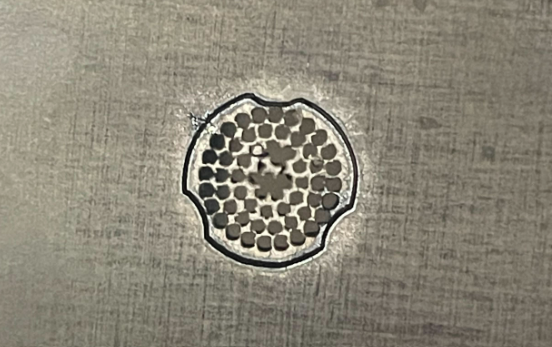

The linear array is the detector stage of a breath-based mass spectrometer being developed at QB3. The goal of this project was to test whether the detector — normally built at lab-bench scale — could be miniaturized while still meeting the electrical and mechanical requirements of the larger system.
The final assembly is a stack of laser-cut stainless-steel electrodes interfaced with a 6-layer PCB, held in place by ESD-resin alignment brackets and dowel pins, and compressed between two CNC'd steel end plates. All materials were chosen for ultra-high-vacuum compatibility.
Background Reading and First Iterations.


We reviewed prior work on parallel linear-array detectors, mainly papers from BYU and a NASA Martian particle detector. Those references informed our assumptions about ion mass ranges, expected signal currents, and the placement of a DC amplifier in the signal chain.
The first concept used circular electrodes held together by three rods and compressed end-to-end. It had good transmittance but was difficult to assemble and offered no clean way to interface with a PCB. The second concept was a 4-rod square stack with rods threaded through the electrodes; this improved the mechanical lock but the PCB still had to sit tangent to the top, which weakened the electrical connection.
Settling on the Spade.

The third iteration was the spade. The flat face at the "stem" gave the PCB a direct mounting surface instead of a tangent contact, which made the electrical connection more reliable. The center hole was sized at 0.781 mm against 3.125 mm-thick stock to maintain the 4:1 electrode-to-hole ratio specified by the project.
For material, oxygen-free copper would have had the best conductivity but is difficult to machine to tight tolerances at this scale. We used stainless steel instead — compatible with CNC and laser cutting, vacuum-safe, and dimensionally stable enough for the datum features. Alignment brackets and spacers were printed in ESD resin, which is slightly conductive and lets static charge dissipate instead of building up.
The first spade had 19 small holes. After the manufacturing process was proven, we added a second ring of holes for 37 total, which raised the transmittance.
Routing the PCB.


The PCB uses a 6-layer stackup with continuous ground planes on the top and bottom and the signal layers buried internally. The extra separation between signal traces and reference planes reduces parasitic capacitance and limits crosstalk between adjacent channels.
Traces exit each pad at a slight angle so that adjacent conductors spread apart quickly. This shortens the parallel run between channels in the high-density pad region and gives a more gradual impedance transition from pad to trace. Mounting holes are sized for M2 hardware.
A second board variant adds an accelerator section on a separate ground pour, with 2512 resistors used to step the high-voltage input down to each accelerator plate while keeping the low-voltage detection side isolated.
Manufacturing and Validation.

Spades were cut from 1/4" steel sheet on the Fablight laser cutter and then deburred by hand using files and a belt sander. Alignment brackets were SLA-printed in ESD resin and reamed on a mill with a 3 mm reamer, using PLA support inserts to keep thin walls from deflecting. The steel base brackets were CNC'd and reamed to the same tolerance so the dowel pins seat without play.
Transmittance was measured as area of holes / total surface area and compared against the ≥60% target. Electrical isolation between adjacent spades was checked through the assembled PCB stackup.
Possible next steps include powder-bed fusion for finer electrode geometry, an oxygen-free-copper revision, and adding an on-board amplifier so the signal does not have to leave the PCB before being conditioned.